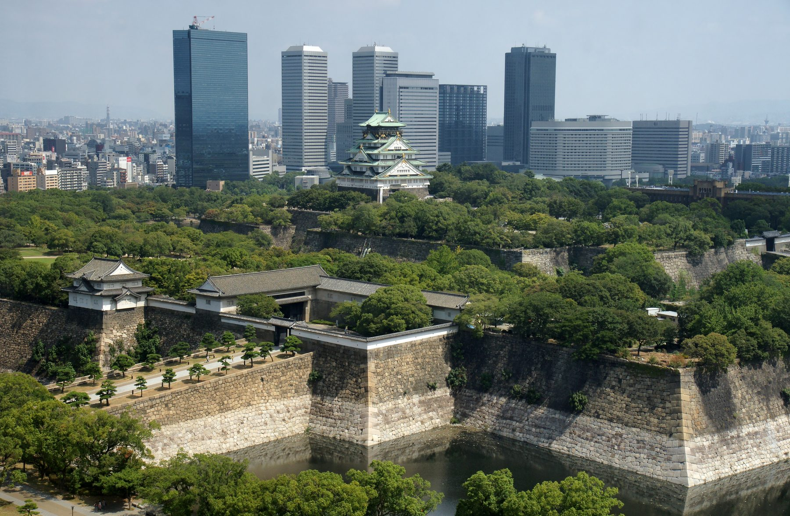
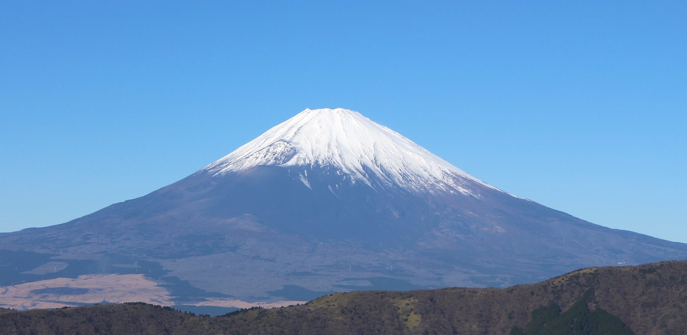
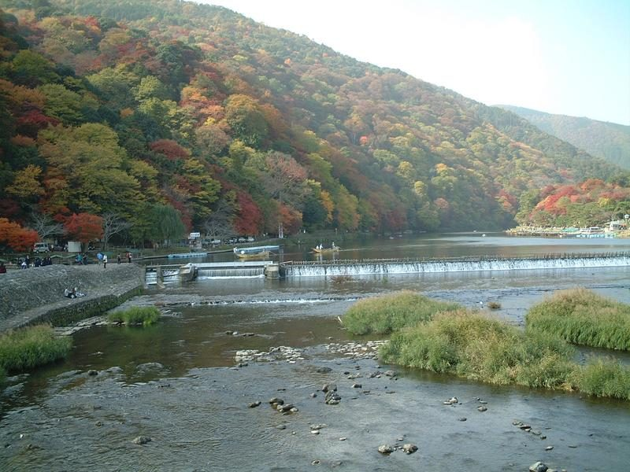

Lịch trình gia đình · Bản web tải ổn định từ GitHub
Nhật Bản 10 ngày theo nhịp vừa đẹp vừa dễ đi
Phiên bản này dùng ảnh local trong thư mục assets/images, nên khi up lên GitHub Pages sẽ không bị lỗi ảnh ngoài, không phụ thuộc nguồn thứ ba và mở ổn định trên điện thoại cho bố mẹ.

Osaka mở màn
Katsuoji · Osaka Castle · Dotonbori

Tokyo kết chuyến
Fuji day tour · Asakusa · Shibuya · Shinjuku
Cách dùng trang này
Đây là bản itinerary kiểu travel magazine nhưng vẫn giữ được tính thực dụng. Mỗi ngày có câu chuyện hành trình, khung giờ, điểm nhấn, mẹo đi, nút mở Google Maps và nút “Đọc thêm” bằng tiếng Việt để bố mẹ xem dễ.
Phần ảnh đã được tải về local và đặt trong thư mục assets/images. Khi up đúng cấu trúc thư mục lên GitHub Pages, ảnh sẽ load trực tiếp từ repo của bạn nên ổn định hơn rất nhiều so với hotlink ngoài.
Cấu trúc repo nên giữ: index.html assets/images/osaka_castle.jpg assets/images/kiyomizu.jpg ...
Nhìn nhanh toàn chuyến
Mỗi ô là tinh thần chính của ngày. Bấm xuống phần dưới để xem chi tiết từng điểm, ảnh, mẹo đi và link đường đi.
26/04
Osaka → Kyoto
Katsuoji buổi sáng, Osaka Castle buổi trưa, Dotonbori cuối chiều, tối sang Kyoto và đi Fushimi Inari.
27/04
Kyoto phía tây
Arashiyama, Sagano Romantic Train, Kinkaku-ji, Nishiki, Gion và Kodai-ji về đêm.
28/04
Nara & Uji
Nara Park, Todai-ji, rồi về Uji để chậm lại với matcha và Byodoin.
29/04
Ine & Amanohashidate
Một ngày cảnh biển Kyoto: dải cát trời, làng chài funaya và nhịp sống yên hơn Kyoto cổ.
30/04
Kyoto sáng sớm
Kiyomizu, Sannenzaka, Yasaka/Gion và quay về ga để lên shinkansen sang Tokyo.
Phần này dành để cả nhà cùng rà lại trước ngày bay. Mỗi thẻ có thể bấm xác nhận, thêm ghi chú riêng và hệ thống sẽ tự lưu trên thiết bị đang mở để lần sau mở lại không mất dấu tick.
✓ Tự lưu dấu tick & ghi chú
1. Trước chuyến đi · Bay & nhập cảnh Nhật
Rà hồ sơ, vé và khai báo trước để ngày bay không cuống. Visit Japan Web hỗ trợ khai thủ tục nhập cảnh/hải quan online; visa vẫn phải kiểm tra riêng theo hộ chiếu. Nếu đi bằng hộ chiếu Việt Nam, kiểm tra đúng diện visa/miễn visa và bộ hồ sơ trên trang Bộ Ngoại giao Nhật.
0/0 đã xác nhận
Nguồn chính dùng để soạn phần này: Visit Japan Web, Bộ Ngoại giao Nhật và Cathay Pacific.
2. Quá cảnh Hồng Kông · Lưu ý thực tế
Với chuyến nối Cathay, phần khó nhất là giữ giấy tờ gọn và đi đúng luồng transit. Nếu transit trong vòng 24 giờ trên cùng hành trình, Cathay cho biết hành lý ký gửi thường sẽ được check-through tới điểm cuối; tại HKIA, có onward boarding pass thì chỉ cần theo biển Transfer/Transit và qua security.
0/0 đã xác nhận
Nguồn chính dùng để soạn phần này: Hong Kong International Airport và Cathay Pacific.
3. Tư trang, đồ đạc & mua gì trước chuyến đi
Nhật đi bộ khá nhiều, lại có Osaka → Kyoto → Tokyo nên đồ mang theo nên thiên về gọn, dễ phối, dễ giặt và chừa chỗ cho mua sắm mang về. Mục tiêu là mỗi người đều có bộ đồ đi hàng ngày thoải mái, còn vali vẫn còn sức chứa cho quà và hàng mua ở Tokyo.
0/0 đã xác nhận
Mẹo thực dụng: chụp nhanh toàn bộ đồ đã pack vào 1 ảnh nhóm để tối trước ngày bay chỉ cần đối chiếu lại.
Tokyo base đã chốt
Airbnb: 1-chōme-5-13 Tatekawa C-SQUARE Rin, Sumida City, Tokyo Prefecture 130-0023, Japan
Katsuoji buổi sáng, Osaka Castle buổi trưa, Dotonbori cuối chiều
Một ngày đi theo nhịp tăng dần: bắt đầu với đền chùa yên tĩnh trên đồi, qua biểu tượng lịch sử của Osaka, rồi kết bằng ánh đèn và đồ ăn ở Dotonbori trước khi chuyển base sang Kyoto.
Xuất phát: APA Namba EkihigashiKết ngày: Hotel Elcient Kyoto HachijoguchiMức đi bộ: VừaMẹo vàng: Pack phần lớn hành lý từ sáng
Osaka ngày đầu không cần tham quá nhiều điểm. Chìa khóa là giữ nhịp gọn: Katsuoji khoảng 1–1,25 giờ là đủ đẹp, Osaka Castle ưu tiên chụp cảnh và dạo khuôn viên, còn Dotonbori chỉ để lấy đúng không khí Osaka trước khi sang Kyoto. Như vậy vừa trọn wish list, vừa không mệt quá khi tối vẫn còn Fushimi Inari.
Giới thiệu ngắn: Katsuoji nổi tiếng với hàng ngàn búp bê daruma nhỏ đặt khắp khuôn viên, tạo nên một không khí vừa thiền tĩnh vừa rất đặc trưng. Nơi này hợp để mở đầu ngày vì cảnh quan còn thoáng, ánh sáng đẹp và tâm trạng cũng nhẹ hơn trước khi vào thành phố.
Nên làm gìĐi bộ qua cầu đỏ, chụp daruma dọc lối, ghé chính điện và ngắm toàn khu đền chùa giữa sườn đồi.
Mẹo điKhông nên ở quá lâu. Giữ mốc khoảng 1–1,25 giờ để không dồn áp lực sang Osaka Castle và chặng sang Kyoto.
Giới thiệu ngắn: Osaka Castle không chỉ đẹp ở bản thân tòa thành mà còn ở cảm giác “đây là Osaka” rất rõ ràng: thành cổ, hào nước, công viên rộng và đường chân trời đô thị phía sau. Với gia đình, điểm này hợp nhất khi đi theo kiểu dạo cảnh và chụp ảnh hơn là cố xem quá kỹ từng tầng.
Nên làm gìChụp ảnh mặt trước lâu đài, dạo công viên, nghỉ chân ngắm hào thành và chọn một góc có thể lấy được cả tòa thành lẫn cây xanh.
Mẹo điNếu đã mệt sau Katsuoji thì không cần ép vào sâu bảo tàng. Phần “đáng nhớ” của Osaka Castle nằm ở tổng thể cảnh quan.
Giới thiệu ngắn: Dotonbori là phần Osaka “đúng chất” nhất với du khách lần đầu: bảng hiệu lớn, ánh đèn phản chiếu trên kênh, cảm giác náo nhiệt và đồ ăn ở khắp nơi. Với lịch trình này, chỉ cần đi vừa đủ để lấy không khí và ăn tối sớm là đẹp.
Nên làm gìChụp biển Glico, đi dọc bờ kênh, chọn một quán ăn sớm rồi quay về khách sạn lấy hành lý.
Mẹo điĐừng biến block này thành shopping dài. Mục tiêu là nếm Osaka và rời đi đúng giờ để tối sang Kyoto không quá muộn.
Sau khi lấy đồ, đi thẳng sang Kyoto và xem Fushimi Inari như một điểm dạo tối, không cần leo quá sâu lên núi.
Fushimi Inari buổi tối
Đi sau 20:00 dễ chịu hơn nhiều so với khung giữa ngày. Chỉ cần đi đoạn cổng torii đầu tiên là đã rất đáng.
Tâm lý ngày đầu
Đây là ngày để “vào form”, không phải ngày để phá kỷ lục số điểm. Giữ sức cho 4 ngày Kyoto mới là tối ưu.

Ngày 27/04 · Kyoto phía tây đến Gion buổi tối
Arashiyama, Sagano Romantic Train, Kinkaku-ji, Nishiki, Gion và Kodai-ji
Một ngày Kyoto rất “đã” nếu đi đúng thứ tự: sáng đi thiên nhiên và cảnh quan, chiều chạm vàng son Kinkaku-ji, rồi kết bằng phố cổ và ánh đèn dịu ở Gion – Kodai-ji.
Xuất phát: Kyoto StationĐiểm nhấn: Sagano Romantic TrainMức đi bộ: Khá nhiềuMẹo vàng: Đi Arashiyama thật sớm
Đây là ngày đẹp nhất của phần Kyoto nếu bạn giữ đúng nhịp. Arashiyama cần đi sớm để đỡ đông. Sau đó Sagano train đóng vai trò như “điểm nghỉ giữa ngày” rất duyên. Kinkaku-ji cho cảm giác lộng lẫy, còn Nishiki – Gion – Kodai-ji làm phần kết vừa thơm mùi đồ ăn, vừa có chất Kyoto cổ.
Giới thiệu ngắn: Arashiyama là một Kyoto dịu hơn: tre, sông, cầu, núi và cảm giác thư thả đầu ngày. Đây là điểm nên đi sớm nhất cả chuyến vì khi vắng, khu vực này có vẻ đẹp rất tinh tế; còn khi đông thì lại dễ thành điểm “chụp xong đi”.
Nên làm gìĐi xuyên Bamboo Grove, ra cầu Togetsukyo, chọn một góc ngắm núi và sông, nếu còn sức ghé Tenryu-ji.
Mẹo điKhông cần cố nhét quá nhiều điểm nhỏ ở Arashiyama. Cái đáng nhất là nhịp cảnh quan tổng thể và cảm giác buổi sáng.
Giới thiệu ngắn: Chặng tàu ngắm cảnh này không dài nhưng rất “điện ảnh”, nhất là với gia đình. Cảm giác chính không phải là tốc độ, mà là được ngồi chậm lại giữa hẻm núi, sông và sắc cây thay đổi theo mùa.
Nên làm gìĐặt ghế cửa sổ trước, chỉ mang đồ gọn nhẹ và xem đây như một đoạn nghỉ mắt giữa ngày.
Mẹo điNếu lỡ nhịp 10:02 thì lấy chuyến tiếp theo, nhưng đừng để trượt quá muộn vì còn Kinkaku-ji phía sau.
Giới thiệu ngắn: Kinkaku-ji là kiểu điểm đến mà nhìn ngoài đời vẫn tạo cảm giác “wow” dù đã xem rất nhiều ảnh. Màu vàng phản chiếu trên mặt hồ khiến cả khung cảnh trông như một bức tranh được dàn dựng quá chuẩn mực.
Nên làm gìĐi theo vòng tham quan thật chậm, chụp một vài khung rộng rồi dành thời gian ngắm sự phản chiếu trên mặt nước.
Mẹo điĐừng bận tâm quá nếu không có góc chụp hoàn toàn vắng người. Kinkaku-ji đẹp ở sự cân bằng toàn cảnh hơn là ảnh cận.
Giới thiệu ngắn: Phần cuối ngày nên đi theo nhịp rất “Kyoto”: ăn nhẹ và mua quà ở Nishiki, rồi sang Gion khi phố bắt đầu lên đèn. Kodai-ji là phần kết trầm hơn, tinh hơn và hợp để khép ngày thật đẹp.
Nên làm gìỞ Nishiki ưu tiên đồ ăn nhẹ và quà; ở Gion đi chậm, ngắm mặt tiền gỗ, ánh đèn và dòng người; ở Kodai-ji dành thời gian cho sân vườn và không khí buổi tối.
Mẹo điNếu đã mệt, cắt bớt thời gian ở Nishiki và ưu tiên Gion/Kodai-ji. Đây mới là phần khiến ngày 27 có chất Kyoto rõ nhất.
Một ngày sâu hơn về chiều sâu văn hóa: hươu Nara, Đại Phật, matcha Uji và Byodoin
Đây là ngày có nhịp rất đẹp nếu bạn bỏ Ginkaku-ji: buổi sáng rộng mở ở Nara, chiều chậm lại ở Uji.
Tuyến thuận nhất: Kyoto → Nara → Uji → KyotoMức đi bộ: Vừa đến khá nhiềuTinh thần: Chậm hơn ngày 27
Nara Park cho không khí cởi mở hơn Kyoto, còn Todai-ji đem lại cảm giác choáng ngợp bởi quy mô. Uji lại là phần làm mềm ngày đi: trà, sông, phố nhỏ và Byodoin. Sự tương phản này khiến ngày 28 rất đáng nhớ.
Giới thiệu ngắn: Nara Park không chỉ là “nơi có hươu”, mà là một không gian rất thư giãn với hồ nước, bãi cỏ, đền chùa và cảm giác thành phố cũ sống chậm. Đây là đoạn mở đầu lý tưởng trước khi vào Todai-ji.
Nên làm gìĐi bộ nhẹ, chụp ảnh với hươu, nhưng đừng mua bánh hươu nếu không muốn thu hút quá đông một lúc.
Mẹo điGiữ đồ ăn gọn, tránh cầm túi nilon lộ ra ngoài vì hươu sẽ chú ý rất nhanh.
Giới thiệu ngắn: Todai-ji gây ấn tượng mạnh vì quy mô gỗ khổng lồ và sự hiện diện rất trang nghiêm của tượng Đại Phật. Đây là điểm khiến Nara vượt qua cảm giác “đi công viên có hươu” để trở thành một ngày văn hóa đúng nghĩa.
Nên làm gìNgắm tổng thể chính điện từ xa trước, sau đó mới đi vào bên trong để cảm được độ lớn của công trình.
Mẹo điNên nghỉ chân và ăn trưa ngay sau Todai-ji trước khi xuống Uji.
Giới thiệu ngắn: Uji là khoảng nghỉ rất duyên sau Nara. Nơi đây gắn với trà xanh, khung cảnh ven sông và một chất Kyoto nhẹ nhàng hơn. Byodoin cho cảm giác thanh thoát, cân xứng và rất hợp để kết lại một ngày văn hóa.
Nên làm gìUống một ly matcha hoặc ăn món vị trà, dạo phố nhỏ, rồi vào Byodoin thật chậm.
Mẹo điĐừng xếp Uji quá sát giờ về Kyoto. Đây là điểm nên thong thả để ngày 28 có “hậu vị” đẹp.
Amanohashidate & Ine: một ngày đổi không khí khỏi đền chùa và phố cổ
Nếu Kyoto là gỗ, ngói và cổng torii, thì ngày 29 là biển xanh, làng chài và đường chân trời rộng mở.
Khuyến nghị: Đi tour trọn ngàyMức đi bộ: Nhẹ đến vừaẢnh đẹp nhất: Từ điểm ngắm cao và thuyền ở Ine
Ngày này nên đi theo tour để tiết kiệm sức và giảm số lần đổi tàu. Amanohashidate đem lại cảm giác “Nhật Bản cảnh quan”, còn Ine lại là “Nhật Bản đời sống”: những căn funaya sát mặt nước và bến thuyền nhỏ khiến cả ngày có sắc thái rất khác phần còn lại của chuyến đi.
Giới thiệu ngắn: Dải cát dài ôm cây thông giữa hai làn nước tạo nên một cảnh quan rất đặc biệt. Khi nhìn từ điểm cao, Amanohashidate đúng kiểu “đẹp vì hình dáng”, khác hẳn vẻ đẹp của đền chùa hay phố cổ.
Nên làm gìLên điểm ngắm, chụp góc rộng, nếu tour có thời gian có thể đi cáp treo hoặc monorail ngắn.
Mẹo điNếu trời nắng mạnh, mũ và kính rất hữu ích vì khu này phản sáng khá nhiều từ mặt biển.
Giới thiệu ngắn: Ine nổi tiếng với dãy nhà funaya dựng ngay sát mép nước, tầng dưới cất thuyền, tầng trên là không gian sinh hoạt. Đây là kiểu làng biển vừa mộc mạc vừa cực kỳ photogenic, nhất là khi nhìn từ mặt nước hoặc từ trên cao.
Nên làm gìNếu tour có cruise hoặc sea taxi, nên ưu tiên vì đó là góc nhìn đẹp nhất để hiểu cấu trúc làng chài.
Mẹo điĐây là ngày nên giữ sức. Đừng cố nhét shopping hay điểm phụ khi tối về Kyoto.
Kiyomizu thật sớm, đi bộ qua Sannenzaka – Ninenzaka rồi quay về ga
Đây là một buổi sáng nên đi đẹp chứ không nên đi nhiều. Mục tiêu là chạm nốt phần Kyoto cổ nhất trước khi lên shinkansen 14:01.
Shinkansen: 14:01 Kyoto → TokyoMức đi bộ: VừaMẹo vàng: Taxi chiều về ga nếu cần tiết kiệm sức
Ngày 30 không nên tham. Kiyomizu-dera và tuyến phố cổ lân cận đủ tạo một cái kết trọn vẹn cho Kyoto. Nếu đi thật sớm, khu này vừa đẹp vừa ít áp lực, còn vẫn dư thời gian để về khách sạn lấy đồ và ăn trưa nhẹ quanh ga.
Giới thiệu ngắn: Kiyomizu-dera đẹp nhất vào sáng sớm, khi sân chùa còn thưa người và phần hiên gỗ lớn nhìn ra thung lũng chưa bị lấp kín bởi đám đông. Đây là loại cảnh khiến Kyoto trở nên rất “đúng Kyoto”.
Nên làm gìĐứng ở hiên chính thật chậm, nhìn xuống tán cây và thành phố, rồi đi vòng nhẹ qua sân chùa.
Mẹo điĐây là buổi sáng cuối cùng ở Kyoto, nên ưu tiên cảm xúc hơn số lượng ảnh.
Giới thiệu ngắn: Đây là phần Kyoto rất dễ “đọng lại” trong ký ức: đường lát đá, nhà gỗ, biển hiệu giản dị, những khung nhìn có tính điện ảnh và cảm giác thành phố xưa vẫn còn thở. Chỉ cần đi chậm là đủ đẹp.
Nên làm gìĐi xuống dốc thật từ tốn, ghé vài tiệm nhỏ nếu thích, rồi kết ở khu Yasaka trước khi bắt taxi về ga.
Mẹo điNếu thấy bắt đầu mệt, cắt Gion và quay về ga sớm. Shinkansen đúng giờ mới là ưu tiên số một của ngày 30.
Tokyo được chia thành ba mood: Fuji day tour cho ngày đầu, Tokyo East cho phần truyền thống – mua quà, và Tokyo West cho phần trẻ trung – shopping – ánh đèn cuối chuyến.
Ngày 01/05 · Fuji day tour
Một ngày dành riêng cho núi Phú Sĩ và tối về Shinjuku ăn ngon
Để lịch Tokyo đỡ rối, tốt nhất xem 01/05 là một ngày ngoại ô trọn vẹn: đi tour, ngắm Fuji, về lại Shinjuku và chốt một bữa tối thật đáng.
Khuyến nghị: Tour đón/trả ở ShinjukuBữa tối đề xuất: Rokkasen HontenMức đi bộ: Nhẹ đến vừa
Giới thiệu ngắn: Ngày Phú Sĩ không cần cố quá nhiều điểm; điều quý nhất là có một khung trời quang để nhìn thấy ngọn núi thật rõ. Kawaguchiko hợp với lần đầu vì vừa dễ tiếp cận vừa cho nhiều góc ngắm đẹp.
Nên làm gìGiữ tâm lý linh hoạt với thời tiết; nếu trời đẹp, ưu tiên thời gian ngắm và chụp hơn là chạy quá nhiều spot nhỏ.
Mẹo điĐây là ngày rất dễ mệt do ngồi xe dài. Tối về Tokyo chỉ nên shopping nhẹ quanh ga.
Giới thiệu ngắn: Shinjuku là phần Tokyo hiện đại, sáng đèn và đầy năng lượng. Sau một ngày đi Fuji, đây là nơi tốt nhất để quay lại nhịp đô thị mà không cần suy nghĩ quá nhiều.
Nên làm gìShopping nhẹ quanh ga, thuốc mỹ phẩm hoặc quà nhanh, rồi ăn tối ở Rokkasen nếu còn đủ sức.
Mẹo điNếu tour về muộn, ưu tiên ăn trước và shopping sau, hoặc bỏ hẳn phần mua sắm để giữ sức cho 02/05.
Giới thiệu ngắn: Asakusa là nơi rất dễ yêu với người đi Nhật lần đầu: dễ đi, rõ ràng, vui mắt và vẫn giữ chất Tokyo xưa. Senso-ji là trái tim của khu này, còn Nakamise là nơi mua quà đẹp nhất nếu bạn đi sớm vừa đủ.
Nên làm gìĐi Senso-ji trước, rồi mới dạo Nakamise và ăn trưa ở WAUNN hoặc khu lân cận.
Mẹo điĐây là chỗ mua quà rất tốt. Đừng đợi tới tối vì buổi sáng khu này dễ thở hơn nhiều.
Giới thiệu ngắn: Ueno mang cảm giác rất địa phương: công viên, bảo tàng, ga tàu lớn và khu mua sắm đông vui nhưng thực dụng. Ameyoko phù hợp để mua đồ ăn vặt, quà, mỹ phẩm hoặc đồ sale trước khi kết bằng một bữa thịt ngon.
Nên làm gìĐi chậm qua Ueno Park rồi dành thời gian chính cho Ameyoko.
Mẹo điNếu ai trong nhà mệt, Ueno là khu rất dễ tách nhịp: người thích shopping đi Ameyoko, người muốn nghỉ có thể ngồi quán cà phê gần ga.
Giới thiệu ngắn: Meiji Jingu là cách rất hay để bắt đầu ngày cuối: yên tĩnh, mát, nhiều cây và hoàn toàn khác với phần Tokyo ồn ào ngay bên ngoài. Sự tương phản này khiến trải nghiệm Tokyo thú vị hơn rất nhiều.
Nên làm gìĐi bộ vào cổng torii lớn, cảm nhận sự chuyển đổi không khí từ phố xá sang rừng đền.
Mẹo điĐi sớm để tận hưởng sự yên tĩnh rồi mới sang Harajuku khi cửa hàng bắt đầu mở.
Giới thiệu ngắn: Harajuku là phần Tokyo “nhỏ mà chất”, còn Shibuya là phần Tokyo “lớn mà sôi động”. Ghép hai khu này trong cùng một ngày là hợp lý nhất vì cảm xúc tăng dần rất tự nhiên: từ ngõ thời trang, qua các khối mall, đến giao lộ đông nhất thế giới.
Nên làm gìShopping ở Takeshita/Omotesando trước, rồi dành buổi chiều cho Shibuya để mua những món cuối cùng.
Mẹo điĐừng cố đi quá nhiều mall. Chọn 1–2 khu mua sắm chính sẽ dễ chịu hơn và ít bị quá tải.
Giới thiệu ngắn: Shinjuku là nơi rất hợp để kết chuyến: vừa có cảm giác “Tokyo thành phố lớn”, vừa thuận cho bữa tối và mua những thứ còn thiếu. Nếu đã ăn Rokkasen hôm 01/05, tối cuối có thể đi nhẹ hơn với NikutoTamago.
Nên làm gìĂn tối, đi dạo một vòng vừa phải quanh ga, rồi về sớm để chuẩn bị cho chuyến bay sáng hôm sau.
Mẹo điĐừng để ngày cuối biến thành marathon shopping. Điều quan trọng nhất là ngủ đủ để ra Haneda nhẹ nhàng.
Để web chạy ổn định, hãy upload toàn bộ nội dung trong gói này lên repo `Japantrip`, không chỉ riêng file HTML. Quan trọng nhất là phải giữ nguyên đường dẫn assets/images/....
Cách làm ngắn nhất: xóa hoặc thay file cũ trong repo, kéo lên file index.html mới và cả thư mục assets, rồi commit. Sau 1–2 phút, refresh lại link GitHub Pages.
Ảnh minh họa: đã tải về local từ các ảnh Wikimedia Commons và lưu sẵn trong repo để tránh phụ thuộc nguồn ngoài.
Liên kết đọc thêm: ưu tiên tìm kiếm tiếng Việt để bố mẹ mở dễ hiểu hơn.